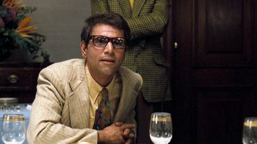

Temas
Como parte de la terapia Tony cuenta sus sueños, que son muy interesantes. Son sueños de un fuerte simbolismo, referidos a sentimientos íntimos de Tony cuyo raciocinio ignora o reprime. A menudo son premonitorios de lo que sabe inconscientemente -por ejemplo, que un gran amigo suyo no es tan bueno. Algunos sueños de los demás personajes también han sido mostrados, por ejemplo uno de Chrissy, deprimido por no ser guionista de cine.
Los modos de matar en Los Soprano y de librarse de los cadáveres son variados. Uno de ellos es llamado "Moe Green Special" (a la Moe Green), porque así murió éste personaje de El Padrino, por un tiro en el ojo.
Se trata pues de la delicia de los amantes del cine de "mafiosos", convirtiéndose esta serie de TV en un enorme hipertexto en el que hay referencias a las grandes películas de la trilogía de El Padrino, de Francis Ford Coppola, Scarface, de Brian de Palma, y Goodfellas, de Martin Scorsese, entre otras.